Dissecting the moat regime at low energies
Shi Yin
CRC meeting: Scientific Papers - A03
28.10.2026
2. Rennecke and SY, II: Correlations, arXiv:2609.32563
Outline
- The moat regime
- Quark–meson model and renormalization
- Shape of the moat regime in the phase diagram
- Moats in meson correlations
- Friedel oscillations and analytic structure
- Quarks, Summary and Outlook
The moat regime
- Moat regime: the static energy of mesons is minimal at nonzero spatial momentum \(\Leftrightarrow\) \(Z^\perp_\phi<0\) (Pisarski, Skokov, Tsvelik 2021)
- Found in functional QCD at large density (Fu, Pawlowski, Rennecke 2019; Fu et al. 2024)
- Superordinate feature of spatially modulated phases: inhomogeneous phases, liquid crystals, quantum pion liquid — an instability \(\Sigma_\phi(0,p_{\rm min})=0\) signals modulated order
- Possible signals in heavy-ion collisions: HBT / two-particle correlations, dilepton rate
- Mechanism: particle–hole fluctuations of quarks around the Fermi surface ⇒ generic, can be studied in models
But in low-energy models the mesons are put in by hand: renormalization and the quark–meson interaction must be under control
- Part I: renormalization and the shape of the moat regime Part II: meson/quark correlations, screening, analytic structure
A toy moat: static energy, poles and screening
- Poles of the static propagator in the complex \(|\boldsymbol{p}|\) plane: \(\mathrm{Im}\to\) screening length, \(\mathrm{Re}\to\) oscillation
- Moat: complex poles \(p_{\rm pole}=\pm p_0+i\,m_{\rm scr}\) with \(p_0\approx p_{\rm min}\) ⇒ \(V(r)\sim e^{-m_{\rm scr}r}\sin(p_0 r)/r\); at \(Z^\perp<-2\sqrt{W}m\) the poles hit the real axis: inhomogeneous instability
Outline
- The moat regime
- Quark–meson model and renormalization
- Shape of the moat regime in the phase diagram
- Moats in meson correlations
- Friedel oscillations and analytic structure
- Quarks, Summary and Outlook
Quark–meson model in RPA
- \(N_f=2\), \(\phi=(\sigma,\boldsymbol\pi)\), \(\rho=\phi^2/2\), \(U(\rho)=-\nu\rho+\tfrac{\lambda}{2}\rho^2\)
- Mean field: \(V(\rho)=U(\rho)-\frac{T}{\mathcal V}\ln\det\mathcal M(\sigma)\) ⇒ gap equation for \(m_f=h\sigma_0/2\)
- RPA: one quark loop with the mean-field quark mass
- Vacuum: \(f_\pi=92\), \(\bar m_\pi=136\), \(\bar m_\sigma=480\), \(m_f=300\) MeV
- CEP at \((T,\mu)_{\rm CEP}\approx(30,\,290)\) MeV
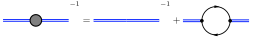
\(Z^\perp_\pi<0\) signals the moat regime; pions, the lightest hadrons, are its most sensitive probe
Renormalization of \(Z^\perp\)
- Dimensional regularization + \(\overline{\rm MS}\): \(\nu(M),\lambda(M)\) fixed by vacuum observables ⇒ thermodynamics is \(M\)-independent
- Momentum-dependent part of \(\Pi^\pi\) needs a kinetic counterterm \(\tfrac12\delta_Z(\partial_\mu\phi)^2\): \(Z\) is power-counting marginal \[ Z^{\perp}_{\pi,\rm vac}(0)=1-\frac{h^2N_c}{8\pi^2}\Big[\bar C+\ln\frac{m_f}{M}\Big] \]
- Renormalization condition \(Z^\perp_\pi(p=0;T=0,\mu=0)=1\) ⇒ \(\bar C(M)=\ln(M/m_f^{\rm vac})\)
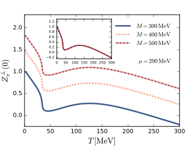
Thermal contributions to \(Z^\perp\) are \(M\)-independent and negative ⇒ where the moat regime sits is decided by the renormalization condition
Vacuum-subtracted \(\overline{\rm MS}\) scheme
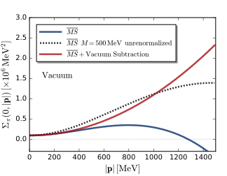
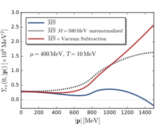
- \(\overline{\rm MS}\): \(\Sigma_\pi\) turns negative at large \(\boldsymbol p\), even in vacuum ⇒ unphysical instability
- VS: trivial static propagator in vacuum, \(\Sigma_\pi=\boldsymbol p^2+\bar m_\pi^2\) ⇒ curvature = screening = pole mass; moat location unchanged
- Only \(\mathrm{Re}\,\boldsymbol p\) is subtracted: frequency dependence and analytic structure are untouched
Outline
- The moat regime
- Quark–meson model and renormalization
- Shape of the moat regime in the phase diagram
- Moats in meson correlations
- Friedel oscillations and analytic structure
- Quarks, Summary and Outlook
Moat regime in the phase diagram
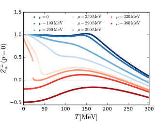
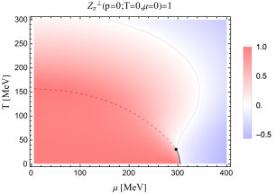
- \(Z^\perp_\pi\) decreases with \(\mu\); for \(\mu\gtrsim\mu_{\rm CEP}\) it is negative at small and intermediate \(T\): the moat regime lies adjacent to the phase boundary in the chirally restored phase
- The \(Z^\perp_\pi=0\) contour follows the chiral transition and merges with it at the CEP: the quark determinant contributes identically to \(\lambda\) and \(Z^\perp\) (Nickel 2009)
- \(\Sigma_\pi>0\) everywhere: no inhomogeneous instability (light \(\bar m_\sigma=480\) MeV)
Proper vs improper renormalization
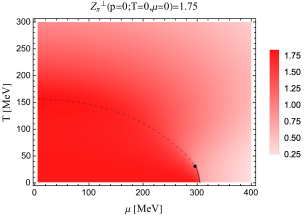
- \(Z=1.75\) mimics a change of \(M\) without a condition for \(Z^\perp\): pole mass \(m_{p,\pi}=\bar m_\pi/\sqrt Z\approx103\) MeV
- \(Z^\perp_\pi\) is shifted by a constant 0.75: no moat regime for \(T<300\) MeV, \(\mu<400\) MeV
- Chiral phase boundary unchanged: \(Z\) does not feed back into the effective potential in RPA
Scheme/scale dependencies reported in the literature are likely due to incomplete renormalization of the self-energy
Large \(T\): creation–annihilation vs particle–hole
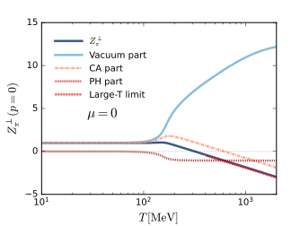
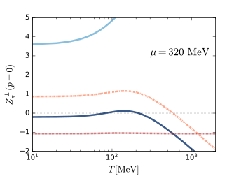
- CA (relativistic creation–annihilation) drives \(Z^\perp_\pi<0\) at large \(T\), even at \(\mu=0\)
- PH (particle–hole, Landau damping) generates the genuine moat at small \(T\), large \(\mu\) — as in FRG-QCD
In-medium Yukawa coupling
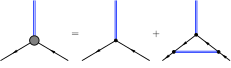
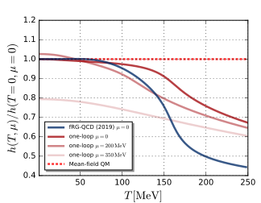
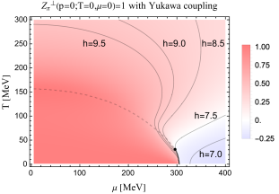
- One-loop \(h(T,\mu)\) decreases with \(T\) like in FRG-QCD; RPA: \(h=\) const. ⇒ CA contributions suppressed at large \(T\)
- \(h_{\rm vac}=7.5\) (\(m_f\approx350\) MeV): moat regime only near the CEP and first-order line, qualitatively like QCD
- \(h_{\rm vac}\gtrsim9\): back to the RPA picture; \(h_{\rm vac}\lesssim6.5\): no moat regime at all
The moat regime at \(\mu=0\) is an artifact of the constant quark–meson coupling
Outline
- The moat regime
- Quark–meson model and renormalization
- Shape of the moat regime in the phase diagram
- Moats in meson correlations
- Friedel oscillations and analytic structure
- Quarks, Summary and Outlook
Moats in other mesons
- \(h_\phi=h_\pi\), VS scheme for all channels
- \(Z^\perp=1\) in vacuum for the heavier chiral partner; the lighter one follows from chiral symmetry
- All \(Z^\perp_\phi\) decrease at large \(\mu\) ⇒ every meson develops a moat, at species-dependent densities
- \(Z^\perp_\eta=Z^\perp_\pi\) in RPA: the anomaly is quadratic in the meson fields for \(N_f=2\)
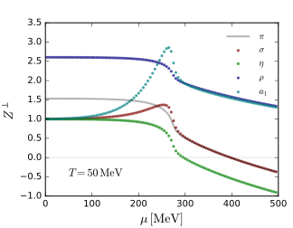
Particle–hole fluctuations contribute to all channels ⇒ more channels for experimental searches
Static two-point function and thermodynamics
- Any structure of the static propagator is inherited by susceptibilities: the moat regime affects thermodynamics
- \(T=30\) MeV: \(\Sigma_\pi\) jumps into the moat across the first-order transition; \(p_{\rm min}\) grows with \(\mu\)
- The pion mass grows faster than the moat deepens ⇒ \(\Sigma_\pi>0\), no instability
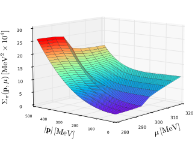
Pion spectral function: the moat is spacelike


- Timelike: pion peak with normal dispersion, broadened above the \(q\bar q\) threshold — unaffected by the moat
- Spacelike: Landau damping (particle–hole) ⇒ enhancement at \(0\le\omega<|\boldsymbol p|\), \(|\boldsymbol p|>0\), connected to \(p_{\rm min}\) at \(\omega=0\)
- Collective excitation (“moaton”), not a quasiparticle — fully consistent with FRG-QCD (Fu et al. 2024)
Outline
- The moat regime
- Quark–meson model and renormalization
- Shape of the moat regime in the phase diagram
- Moats in meson correlations
- Friedel oscillations and analytic structure
- Quarks, Summary and Outlook
Is the moat a Friedel oscillation?
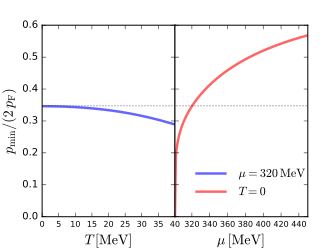
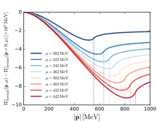
- Branch point at \(p=2p_F\): particle–hole excitations change from gapless to gapped ⇒ kink, Friedel oscillations
- \(p_{\rm min}/2p_F\lesssim1/3\) at \(\mu=320\) MeV, \(\lesssim0.6\) at \(\mu=450\) MeV: the moat is not set by \(2p_F\)
Quark–antiquark screening potential
- Moat modulations live in the exponentially suppressed short-range part
- Visible only if decay length \(\gg\) period: \(\ l^2/\lambda^2\simeq p_{\rm min}^4Z_1/(\pi^2m_{\rm eff}^2)\) ⇒ close to an inhomogeneous instability
- Here the moat is shallow: oscillations swallowed by the decay; long-range tail = Friedel
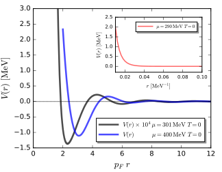
Analytic structure in the complex \(|\boldsymbol p|\) plane
no moat
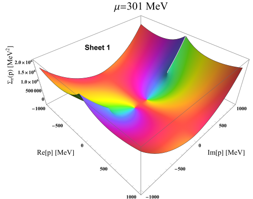
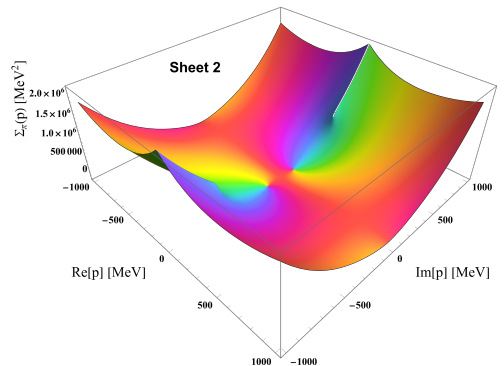
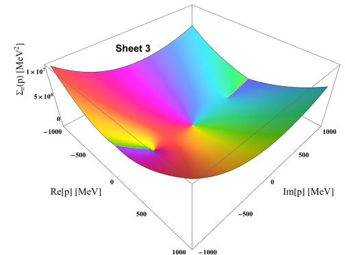
moat
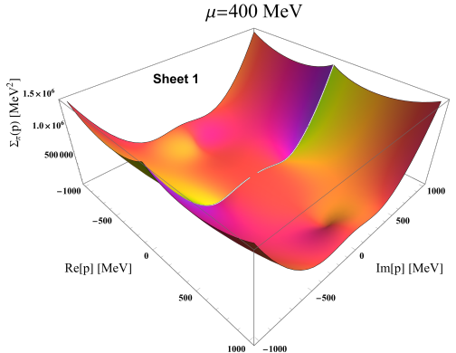
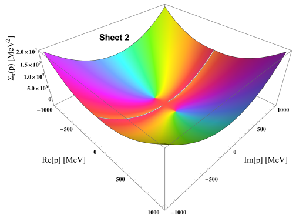
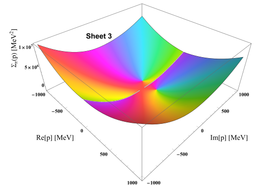
- Outside: imaginary screening poles and cuts from \(\pm2im_f\) on the principal sheet
- Moat: cuts move to the origin, poles pushed to unphysical sheets — real poles on Sheet 2 (“virtual instabilities”), complex poles on Sheet 3
- \(T=0\), \(\overline{\rm MS}\); qualitatively identical in the VS scheme (only \(\mathrm{Re}\,\boldsymbol p\) subtracted)
Outline
- The moat regime
- Quark–meson model and renormalization
- Shape of the moat regime in the phase diagram
- Moats in meson correlations
- Friedel oscillations and analytic structure
- Quarks, Summary and Outlook
Quarks are insensitive to the moat
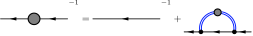
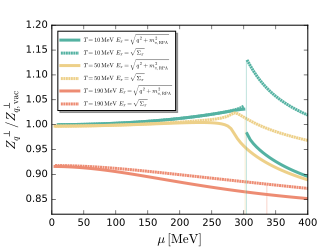
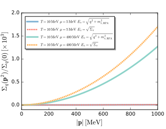
- Solid: full RPA pion; dashed: momentum-independent self-energy only — no extra change when entering the moat
- Symmetry-restoring static bosonic fluctuations enhanced, symmetry-breaking fermionic ones unaffected
The chiral phase boundary and the CEP could be pushed to larger \(\mu_B\) and smaller \(T\), even without inhomogeneous instabilities
Summary and Outlook
Summary
- \(Z^\perp\) needs its own renormalization condition; with it the moat regime is RG consistent. VS scheme removes the unphysical large-momentum instability
- The moat regime lies next to the chiral phase boundary and merges with it at the CEP; the moat at large \(T\) (CA) is an artifact of a constant Yukawa coupling
- All mesons (\(\pi,\sigma,\eta,\rho,a_1\)) can show moat behavior; it is a spacelike enhancement of the spectral function
- Moat modulations are short-range and distinct from Friedel oscillations; they are tied to complex poles on unphysical Riemann sheets
- Quarks are essentially insensitive to the moat regime
Outlook
- Feed the moat regime back self-consistently: how much do the chiral phase boundary and the CEP move?
- Track the complex moat poles through the phase diagram at \(T>0\): reconstruction from lattice data at small density?
- Physical renormalization conditions for \(Z^\perp\), e.g. from lattice screening masses